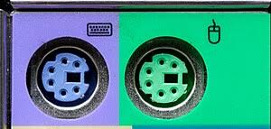
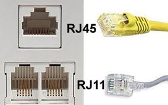
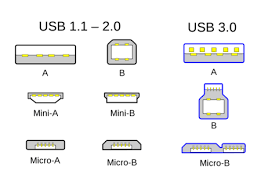
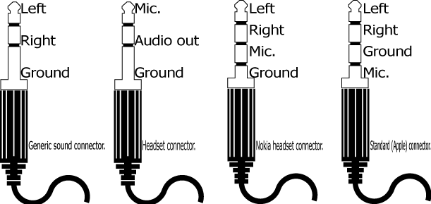
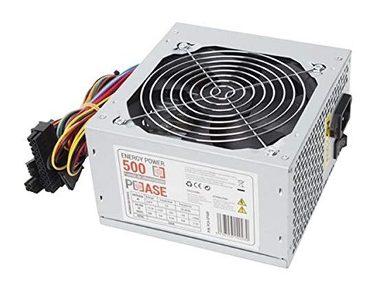
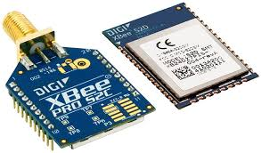
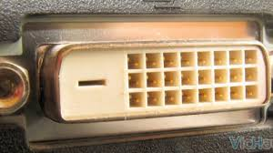
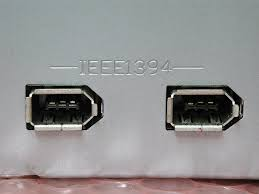
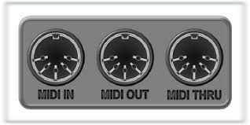

Preguntas del juego (Q1–Q15)
Preguntas adicionales (Q16–Q40)
BLOQUE 1 — Preguntas del juego ¿Quién quiere ser millonario? (Q1–Q15)
Q1Identificación visual · Muy fácil

¿Cuál es la función del conector mostrado en la imagen? Fíjate en su forma circular y en que aparece en dos colores distintos según el dispositivo que conecta.
Q2Identificación visual · Fácil

¿Cómo se denomina el conector de 15 pines mostrado en la imagen?
Q3Identificación visual · Fácil

La imagen muestra dos conectores de apariencia similar pero diferente tamaño. ¿Cuántos pines tiene el conector MÁS GRANDE y cómo se llama?
Q4Identificación visual · Fácil

La imagen muestra la evolución de los conectores USB. ¿Cuál de ellos ha sido adoptado como estándar universal en la mayoría de dispositivos portátiles actuales?
Q5 ★Identificación · Media · SALVAVIDAS

El conector de la imagen es el más extendido para enlazar fuentes de vídeo con pantallas. ¿Cuántos tipos de señal distintos puede transportar simultáneamente en un único cable?
Q6Identificación visual · Media

¿Cómo se denomina el conector de 25 pines mostrado en la imagen?
Q7Identificación visual · Media

Observa el número de bandas aislantes (anillos negros) del conector Jack de la imagen. ¿Para qué tipo de dispositivo indica esa configuración que está diseñado?
Q8Conocimiento · Media-Alta

Un técnico quiere conectar 3 monitores en cadena desde una única salida de la GPU, sin ningún switch de vídeo externo. ¿Qué tecnología exclusiva de DisplayPort lo hace posible?
Q9Conocimiento · Alta

Se necesita un enlace de fibra óptica entre dos edificios separados 5 km. ¿Qué tipo de fibra es la adecuada para esa distancia?
Q10 ★Identificación visual · Alta · SALVAVIDAS

¿Cuántos pines tiene el conector principal de alimentación ATX moderno que conecta la fuente de alimentación a la placa base?
Q11Conocimiento · Difícil
¿Qué versión de HDMI fue la primera en soportar nativamente 4K a 120 Hz, tasa de refresco variable (VRR) y canal de audio mejorado (eARC)?
Q12Identificación visual · Difícil

El módulo de la imagen implementa un protocolo inalámbrico de corto alcance diseñado específicamente para redes de sensores. ¿Cuál de estas afirmaciones describe MEJOR su uso típico?
Q13Conocimiento técnico · Muy difícil
¿Cuántos pines tiene el conector interno USB 3.0 (header) ubicado en la placa base, al que se conecta el panel frontal del chasis?
Q14Conocimiento técnico · Muy difícil
Un SSD NVMe M.2 con interfaz PCIe Gen 5 x4 alcanza velocidades de lectura secuencial de aproximadamente:
Q15 🏆¡LA PREGUNTA DEL MILLÓN!
En el estándar T568B (el más usado en instalaciones nuevas de red), ¿qué colores ocupan los pines 1 y 2 del conector RJ-45?
BLOQUE 2 — Preguntas adicionales basadas en los apuntes (Q16–Q40)
Q16Definición · Básico
¿Qué significa el acrónimo "USB"?
Q17Conocimiento · Básico
¿Cuántos pines de contacto tiene el conector RJ-45 utilizado en redes Ethernet?
Q18Conocimiento · Básico
¿De qué color es el puerto de salida de audio principal (line out / salida a altavoces) en una tarjeta de sonido estándar de PC?
Q19Conocimiento · Básico
¿Cuántos pines tiene el conector de DATOS SATA (el más pequeño y plano, diferente al de alimentación)?
Q20Conocimiento · Básico
¿Cuál es la velocidad máxima de transferencia teórica de la interfaz SATA III?
Q21Identificación visual · Media

¿Cuál de los tipos de conector DVI incorpora pines adicionales en forma de cruz (palillo) que le permiten ser compatible con monitores analógicos mediante un adaptador pasivo VGA?
Q22Identificación visual · Media

FireWire es el nombre comercial de Apple para el estándar de bus serie de alta velocidad también conocido como:
Q23Conocimiento · Media
¿Qué versión del estándar USB alcanza los 40 Gbps de velocidad de transferencia bidireccional?
Q24Conocimiento · Media
De entre las siguientes tecnologías inalámbricas, ¿cuál tiene mayor alcance (puede llegar a kilómetros de distancia)?
Q25Conocimiento · Media
La fuente de alimentación ATX incluye, además del conector principal de 24 pines, un segundo conector cuadrado que se inserta cerca del socket. ¿Cuántos pines tiene en su configuración más habitual?
Q26Definición · Media
¿Qué significa el acrónimo NVMe?
Q27Identificación visual · Media

En un conector RCA de audio estéreo, ¿qué color indica el canal de audio DERECHO?
Q28Conocimiento · Media-Alta
Para una instalación nueva de red a 10 Gbps hasta 100 metros, ¿qué categoría de cable UTP es la mínima certificada?
Q29Conocimiento · Alta
El conector de 16 pines 12VHPWR (12V-2×6), presente en GPUs de gama alta como la RTX 4090, ¿cuántos vatios puede suministrar como máximo?
Q30Conocimiento técnico · Alta
¿Cuántos pines tiene el header HD Audio (HDA) de la placa base que conecta el audio frontal del chasis?
Q31Conocimiento · Alta
Los conectores LC de fibra óptica se diferencian de los SC en que los LC son:
Q32Conocimiento · Alta
¿Qué versión de Bluetooth introdujo por primera vez el modo de bajo consumo (BLE / Bluetooth Smart)?
Q33Identificación visual · Media

El conector DIN de 5 pines mostrado en la imagen se usa en el estándar:
Q34Conocimiento · Media
¿Cuál es la principal ventaja PRÁCTICA y distintiva del conector USB-C frente al USB-A que los usuarios notan a diario?
Q35Conocimiento técnico · Alta
En el header del panel frontal (F_PANEL / JFP1) de la placa base, ¿qué señal corresponde al LED que PARPADEA durante las operaciones de lectura y escritura del almacenamiento interno?
Q36Conocimiento · Básico
Un cable de red UTP Cat6 (o cualquier categoría actual) está formado por:
Q37Conocimiento · Media
¿Qué generación de Wi-Fi fue la primera en introducir el uso de la banda de 6 GHz (espectro adicional no congestionado)?
Q38Conocimiento · Media
Thunderbolt 3 y Thunderbolt 4 utilizan el mismo conector físico que un estándar USB muy extendido. ¿Cuál es?
Q39Identificación visual · Media

El conector BNC de la imagen (de bayoneta) se usa principalmente en:
Q40Conocimiento · Básico
¿Cuál es la velocidad máxima de transferencia del estándar USB 2.0 en su modo de mayor rendimiento (Hi-Speed)?
🔑 CLAVE DE RESPUESTAS
Q1: B
Q2: B
Q3: B
Q4: D
Q5: C
Q6: B
Q7: B
Q8: B
Q9: C
Q10: B
Q11: C
Q12: B
Q13: C
Q14: C
Q15: B
Q16: A
Q17: C
Q18: C
Q19: A
Q20: B
Q21: C
Q22: B
Q23: D
Q24: D
Q25: B
Q26: B
Q27: B
Q28: C
Q29: D
Q30: B
Q31: B
Q32: C
Q33: A
Q34: C
Q35: B
Q36: C
Q37: C
Q38: B
Q39: C
Q40: B
★ = Punto de salvavidas garantizado | IES Valle del Jerte · MME 2024-2025